AIKO Space · IAAD Turin — 2021–2025
01 — AIKO Space
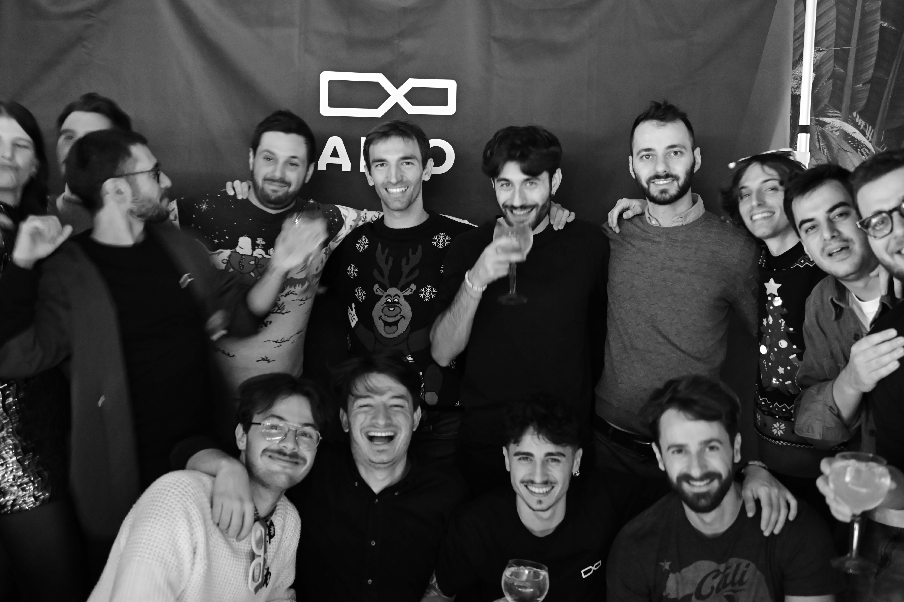
AIKO Space · Turin · October 2024 – April 2025
AIKO is a Turin-based deep-tech startup that builds AI software for autonomous satellites — software that lets spacecraft take decisions in real time, detect anomalies, and operate without waiting for commands from Earth.
My role as Designer & Developer was an unusual one for a company full of aerospace engineers: I built virtual reality environments used to train AIKO's AI. The idea is that before a model goes to orbit, it needs to learn somewhere — and that somewhere was a world I designed.
Bachelor degree in Transportation Design, graduated July 2024. Three years of projects spanning automotive, naval, and mobility design — from pencil sketches to Blender 3D to final renders.
Project 01 — Naval Design
A full superyacht concept developed from the exterior silhouette down to interior cabin details. The design language contrasts a sharp, minimal hull with warm, residential interiors — making the yacht feel like a home that happens to float.
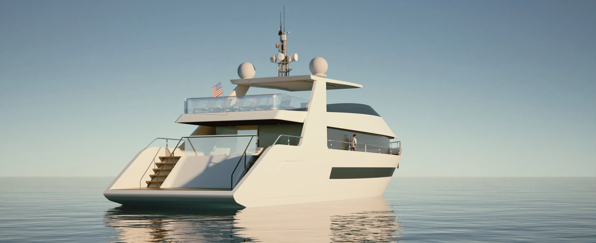
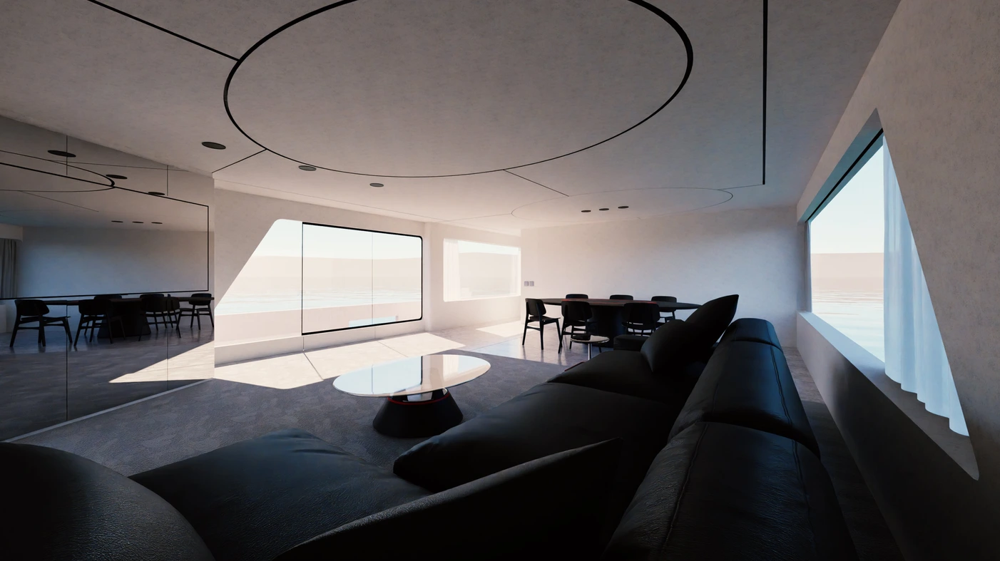
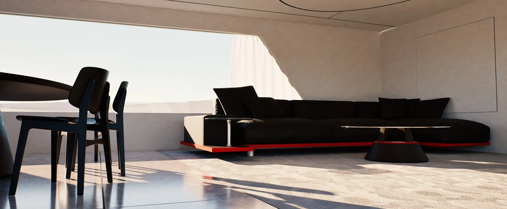
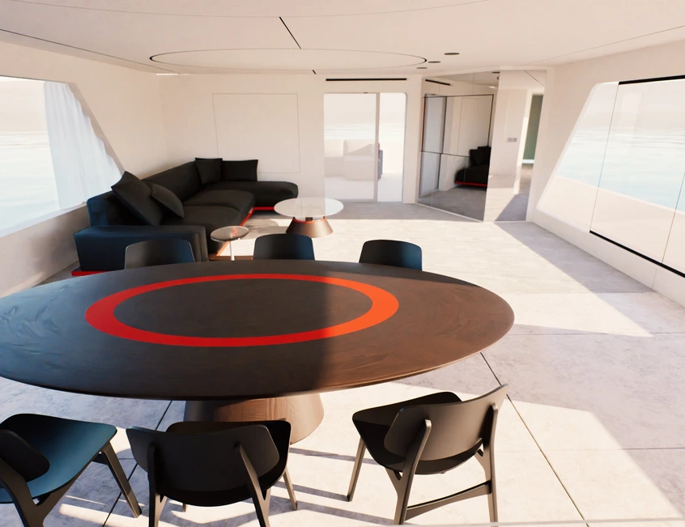
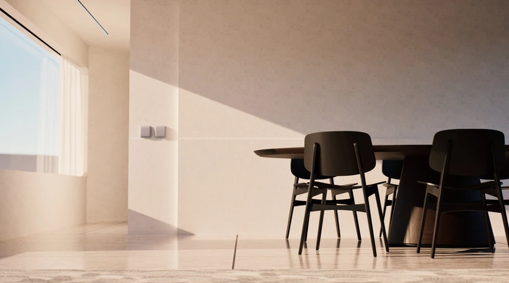
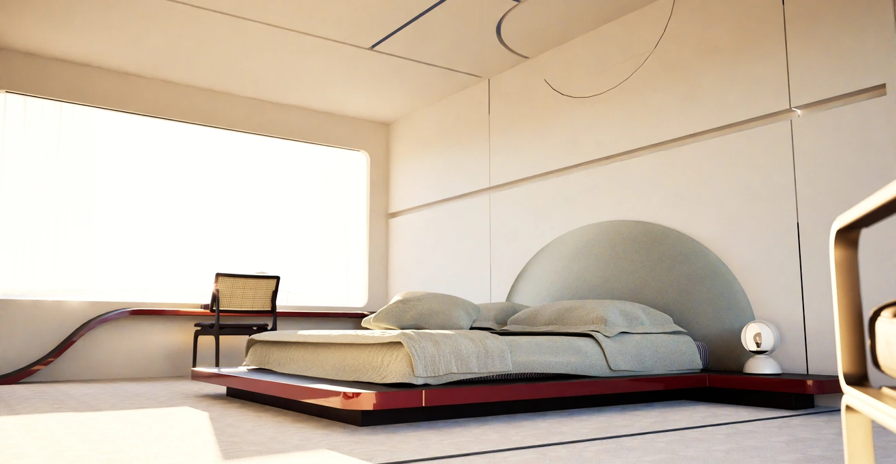
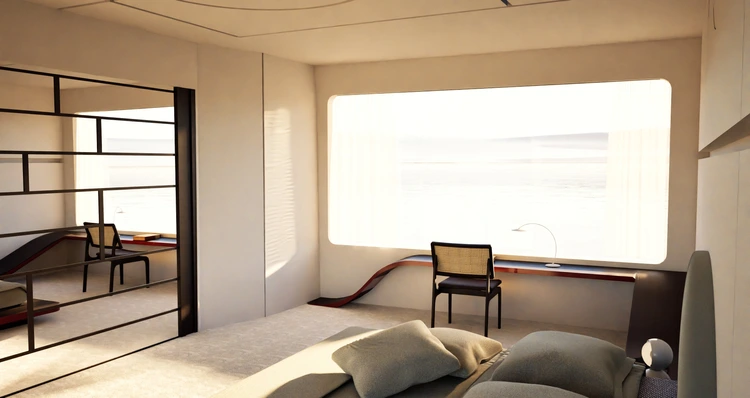
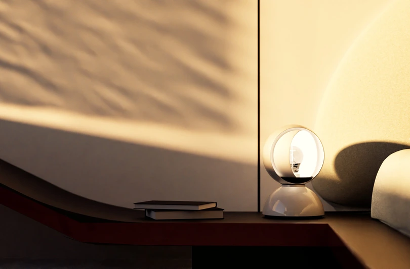
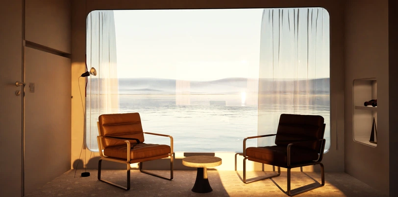
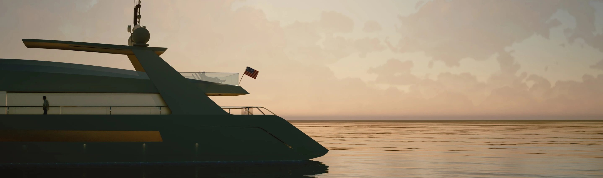
Project 02 — Thesis Project
My thesis project is a rethinking of the camper van as a living unit — fully autonomous, modular, and designed for long-term inhabitation. The exterior breaks with every convention of the category. The interior is thought from the inside out: how do you live well in 7.35 metres?
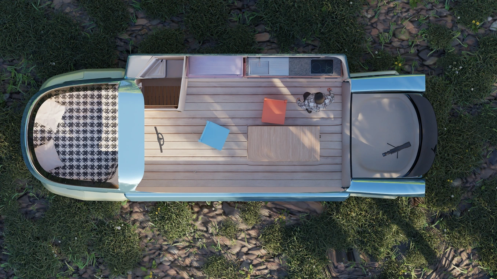
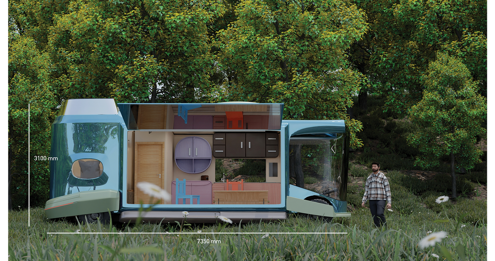
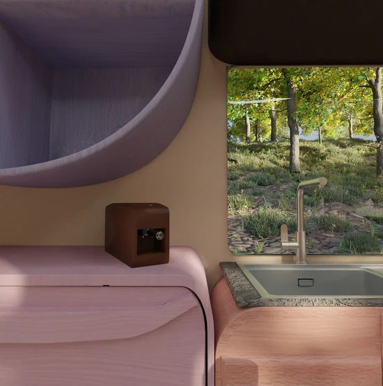
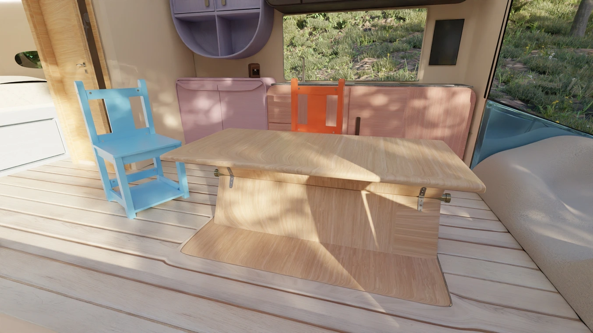
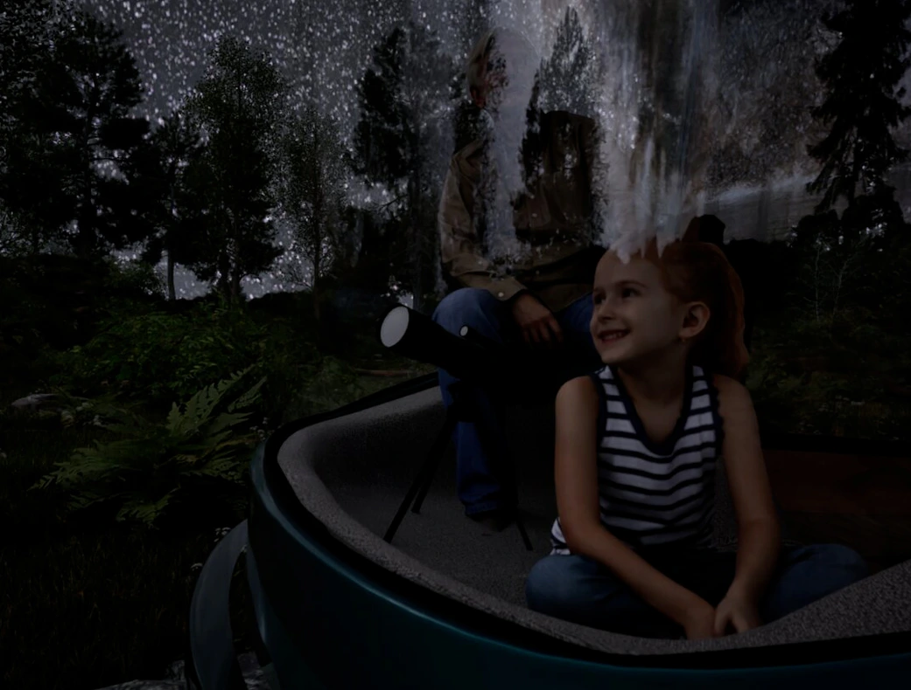
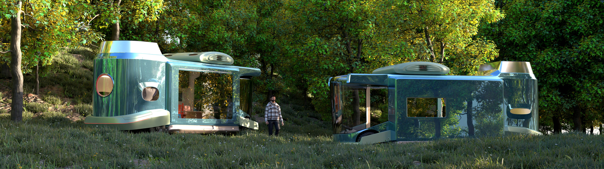
Project 03 — Automotive Design
A compact city car concept that pushes the proportions of the urban vehicle toward something more expressive and less apologetic. The floral wheel design, the panoramic greenhouse, the asymmetric body — all deliberate provocations against the idea that a small car must be invisible.
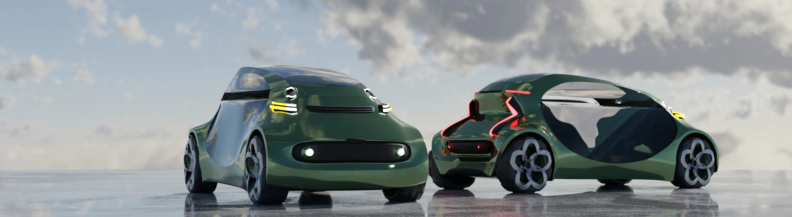
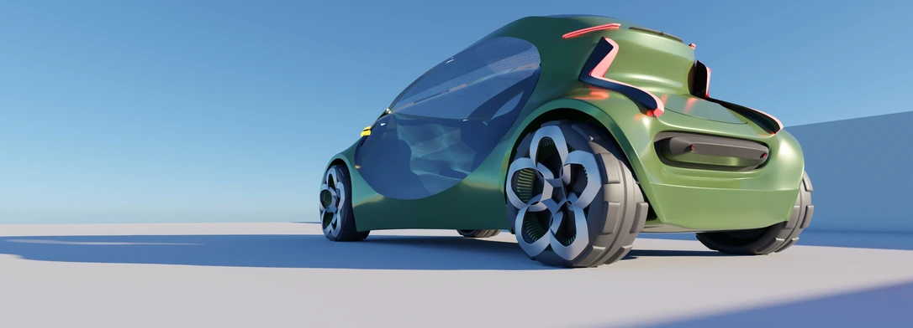
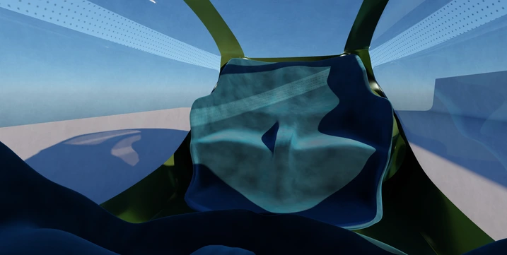
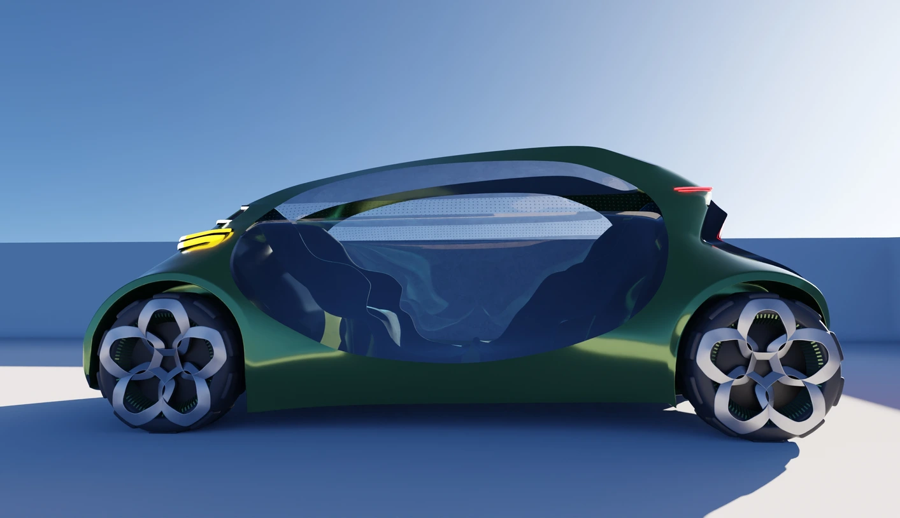
The best designs don't explain themselves.
They just make you
want to get in.